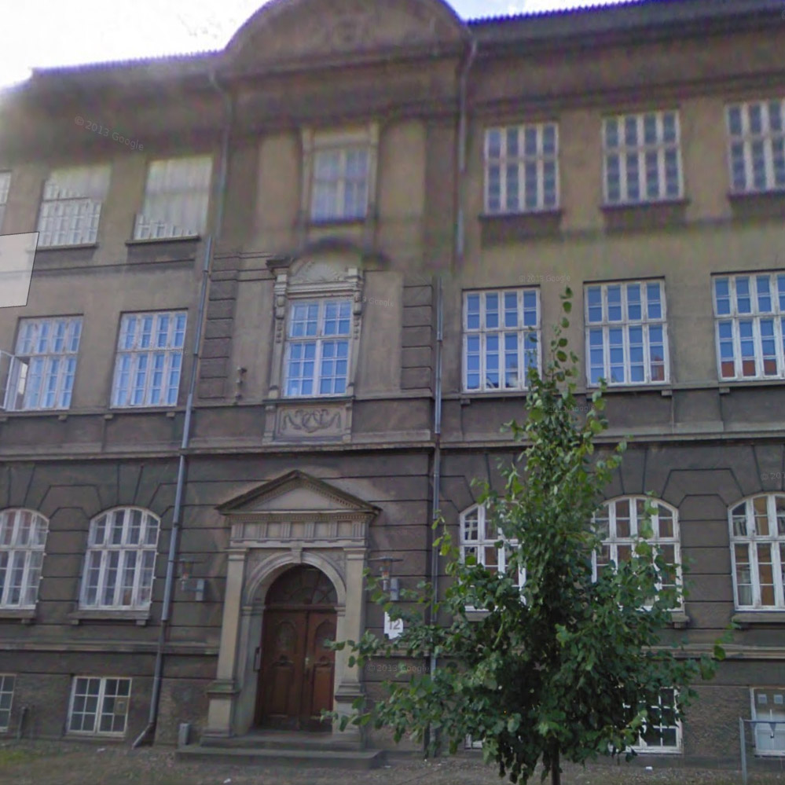
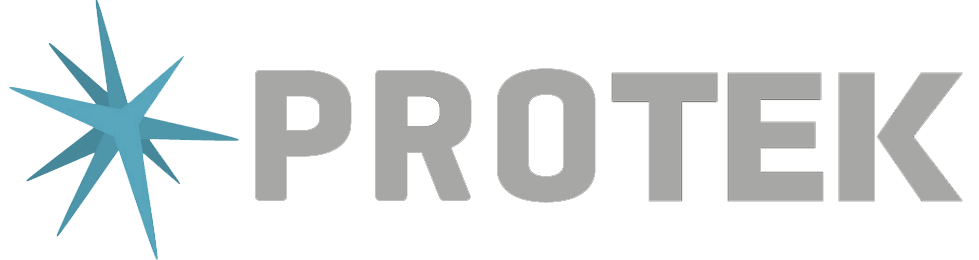
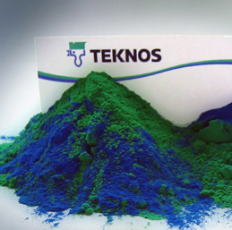
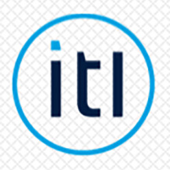
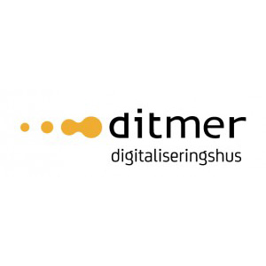
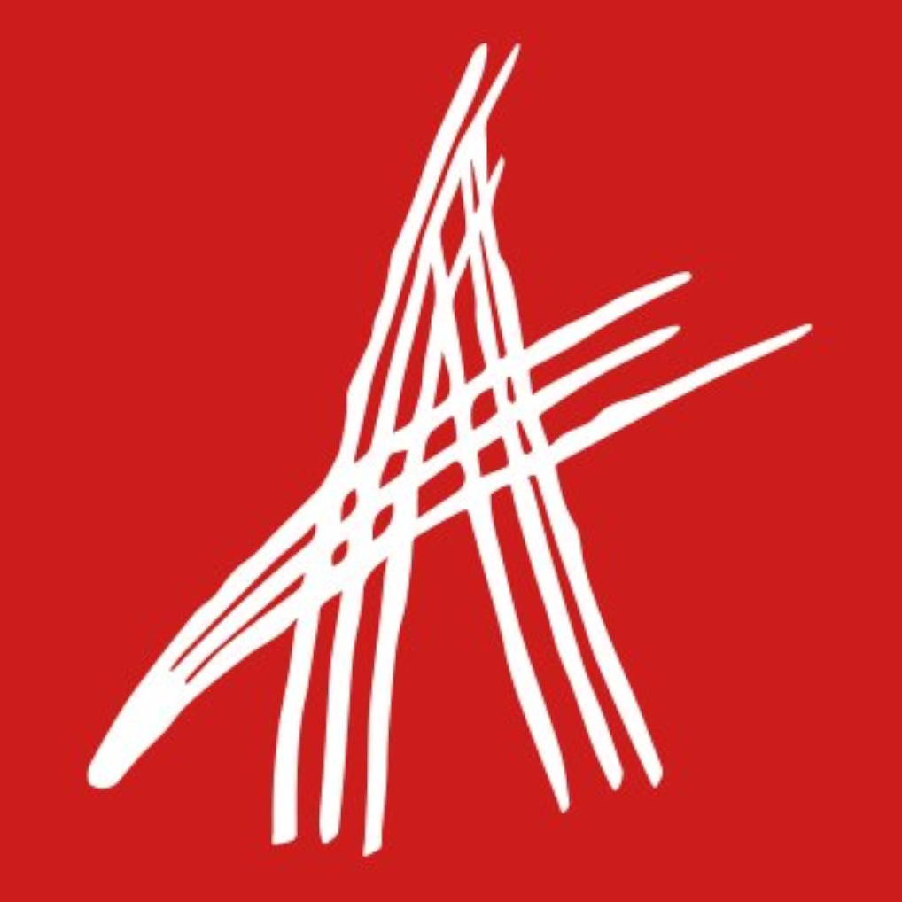
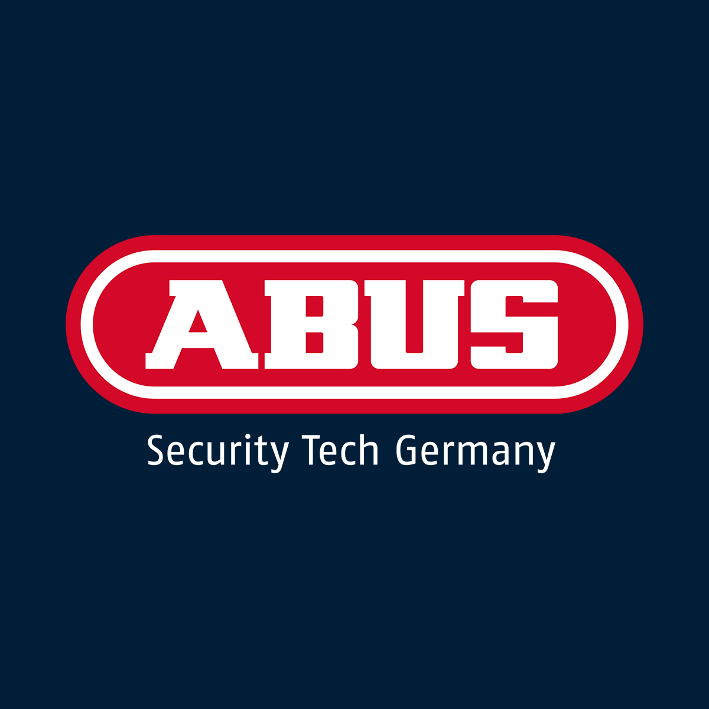
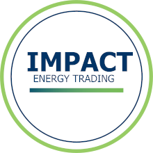
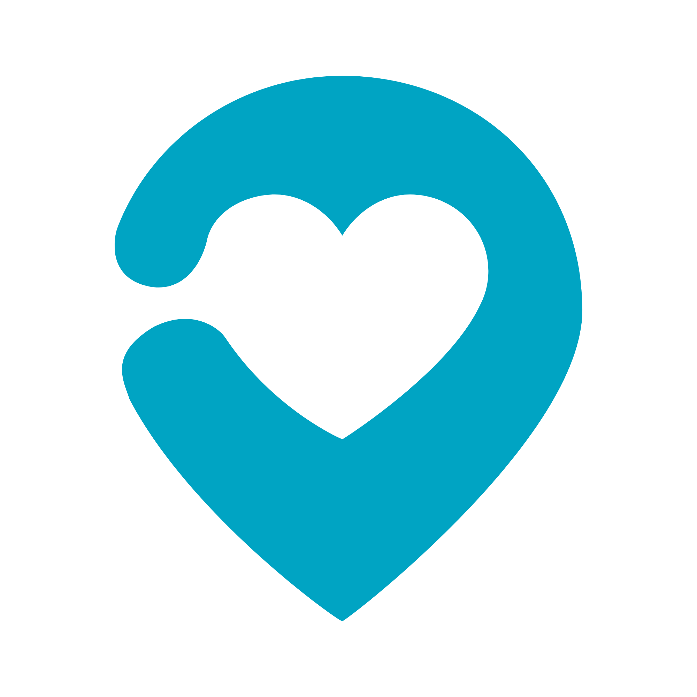

1994 – 2001

Uddannelse- HTX svagstrøm, Horsens, 1994–1997
- Underviser, LOF aftenskole, 1995–1996. Grundlæggende brug af EDB. (Ja, det hed EDB dengang!)
- Datamatiker, Horsens Handelsskole, 1999–2001

Send en mailSenior Lead Engineer · TravelMind Group
AI-drevet udvikling og Harness Engineering. Bygget på 28 års software, drift og ledelse.
1998. Progress 4GL og en fabrik, der skulle køre.
Siden da: .NET, booking, PLM og cloud.
Ledelse af teams, arkitektur, drift. Fra udvikler til CTO.
Nu bygger jeg rammerne, der gør AI-agenter til noget, man kan stole på.
CV · 1994 til i dag
Ét spor, ni arbejdspladser og en egen virksomhed ved siden af.
1994 – 2001

Uddannelse1998 – 2000

Teknos A/SProgress 4GL udvikler i mainframe-miljø
2001 – 2004

ITL A/S.NET udvikler
2004 – 2013
2013 – 2017

Ditmer A/SUdviklingskonsulent, C# og JavaScript
2017 – 2022
IT Manager
2022 – 2023

Aras Corp, BostonSenior Systems Architect
Cloud infrastructure og system design.
2023 – 2024

ABUS Nordic A/SHead of IT
Daglig ledelse og onboarding, serverdrift, Navision, interne værktøjer i C#, automatisering og migrering af legacy-systemer til cloud og SaaS.
2024 – 2026

Impact Energy Trading a/sCTO
C#, ReactJS, GitLab CI/CD, O365-administration, domain admin, telefoni og cloud-strategi. Plus alt andet, der kan sættes strøm til.
2026 – i dag

TravelMind GroupSenior Lead Engineer
AI-drevet udvikling og Harness Engineering: agent-baserede workflows, rammer og guardrails, der gør AI-agenter pålidelige i produktion.
Mange flere projekter.
Spørg, hvis du vil høre om dem.
Points of interest